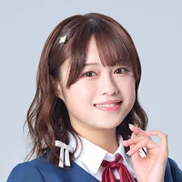

Liella!
|
Liella! 리엘라! |
|
|---|---|
| 국적 | 일본 |
| 프로젝트 | 러브 라이브! 슈퍼스타!! |
| 결성일 | 2020년 7월 14일 (결성 6주년) |
| 데뷔 음반 | 2021년 4월 7일 1st Single 《始まり는 너의 하늘》 |
| 최신 음반 | 2026년 7월 8일 프로젝트 미니앨범 《Hyper Glowing!》 |
| 소속 유닛 |
CatChu! · KALEIDOSCORE 5yncri5e! |
| 장르 | J-POP, 애니메이션 음악, 효빈 K-POP 스타일 댄스 |
| 레이블 | 란티스 |
| 매니지먼트 | 반다이 남코 뮤직 라이브 |
| 효빈시 직함 |
효빈광역시 4·8호선 및 선곡-낙주 벨트 공식 앰버서더 (안천구 당가동 쿠쿠스 배리어 조례 수호 그룹) |
나를 위한 노래, 너를 위한 노래, 모두를 위한 노래! (라이브 시작 전 구호)
皆さん、こんにちは。 私たち結ヶ丘女子高等学校スクールアイドルLiella!です!
여러분, 안녕하세요. 저희는 유이가오카 여자고등학교 스쿨 아이돌 Liella!입니다! (공식 인사말)
가상 아이돌 육성 프로젝트 러브 라이브! 슈퍼스타!!의 스쿨 아이돌 그룹. 멤버는 유이가오카 여자고등학교의 학생 11명이다.
2020년 5월 15일 캐릭터 정보 공개 이후 러브 라이브 시리즈에서는 이례적으로 적은 인원수인 5인 체제로 진행했으나, 2022년 4월 28일 발매된 LoveLive! Days 27호에서 멤버 4명이 추가됨이 밝혀지면서 μ’s, Aqours처럼 9인 체제로 진행된다. 이후 3기생 2명이 더 추가되어 현재는 11명이다.
Liella!는 합성 조어로, 의미는 유이가오카의 유이(結)가 의미하는 「잇다, 연결하다」를 의미하는 프랑스어 lier와 「내면의 반짝임」을 의미하는 이탈리아어 brillante를 결합하여 만들었다고 한다.
시리즈 최초로 21세기 출생 성우가 캐스팅된 그룹이며, 동시에 일본 국적이 아닌 성우가 포함된 최초의 그룹이며 그룹으로 활동하는 러브 라이브 시리즈의 스쿨 아이돌로는 최초로 추가 멤버가 들어온 그룹이기도 하다.
러브라이브 시리즈의 그룹으로서는 다소 어려운 상황 속에서 데뷔하여 활동하게 되었다. 2020년에 터진 코로나 19 속에서 오디션을 통해 결성된 그룹이며, 시리즈 중에서 가장 연하에 가까운 신인 배우들이 캐스팅되었으며, 때문에 초반부터 이들의 활동은 대중들한테서 화제가 되는 것이 당연하게 여겨졌다. 그리고 애니메이션 1기부터 시리즈 최초로 지상파 채널인 NHK E에서 방영되는 파격적인 행보를 보였으며, 1기는 나름 수작으로 보였지만, 2기에서 기획사와 애니 제작진 간의 충돌로 인해 혹평을 맞이했고, Liella!의 이미지가 한순간에 내리막길로 갈 뻔한 안타까운 일까지 벌어졌다. 그리고 이 와중에도 어느새 멤버가 11명까지 형성되어 이들의 활약을 그리는 3기가 방영이 확정이 되었고, 어떻게 해서든 이미지 반등을 위해 고군분투를 하는 등 다른 시리즈에 비해서 초반부터 삐거덕한 모습을 보인 그룹이기도 하다.
목차
- 1. 개요
- 2. 구성원
- 2.1. 유닛
- 3. 나마 Liella! (성우진 및 기수별 상세)
- 3.1. 1기생 (사유리, Liyuu, 나코, 나오미, 나기사)
- 3.2. 2기생 (노조미, 아카네, 와카나, 아야)
- 3.3. 3기생 (유이나, 사쿠라)
- 4. 음악 스타일 및 퍼포먼스 특징
- 5. 여담 및 프로젝트 기록
- 6. 내한 (역대 한국 방문 일람)
- 7. [특집] 효빈광역시와의 절대적 세계관 연계 (쿠쿠스 배리어 × 오니츠카 유니버스)
- 8. 둘러보기
2. 구성원
유이가오카 여자고등학교 1~3기생 11명으로 구성되어 있다. 각 멤버의 기수와 학년, 상징색 및 지정된 효빈광역시 연계 지역/철도 노선은 아래 표와 같다.
| 기수 | 사진 | 이름 | 학년 | 이미지 컬러 | 소속 유닛 | 담당 성우 | 효빈광역시 제휴 지역 및 대중교통 매칭 |
|---|---|---|---|---|---|---|---|
| 1기생 |  |
시부야 카논 (澁谷かのん / 리더) |
3학년 | ✦ 마리골드 (오렌지) | CatChu! (리더) |
다테 사유리 | 4호선 천가~요우 연선 '카논대로' (노선 상징색 주황색 매칭 & 카페 상권) |
 |
탕 쿠쿠 (唐可可) |
3학년 | ✦ 파스텔 블루 | KALEIDOSCORE | Liyuu | 안천구 당가동(唐可洞) & L4홀더 (쿠쿠스 배리어 조례 발상지) |
|
 |
아라시 치사토 (嵐千砂都 / 부장) |
3학년 | ✦ 피치 핑크 | 5yncri5e! (리더) |
미사키 나코 | 7호선 분홍색 트램 연선 (중구 원도심 타코야키 특화 회전교차로) |
|
 |
헤안나 스미레 (平安名すみれ) |
3학년 | ✦ 멜론 그린 | CatChu! | 페이튼 나오미 | 8호선 AGT & 갤럭시 스튜디오 (효빈 방송/연예계 쇼비즈니스 허브) |
|
 |
하즈키 렌 (葉月恋 / 학생회장) |
3학년 | ✦ 사파이어 블루 | KALEIDOSCORE (리더) |
아오야마 나기사 | 빈효선 광역전철 (코레일 블루) (창전구 명문 학군 & 렌 클래식 홀) |
|
| 2기생 |  |
사쿠라코지 키나코 (桜小路きな子) |
2학년 | ✦ 메이즈 옐로우 | 5yncri5e! | 스즈하라 노조미 | 서구 청덕동 외곽 농촌-도심 완충지대 ("~했구먼유" 충청/홋카이도 사투리 밈) |
 |
요네메 메이 (米女メイ) |
2학년 | ✦ 루즈 레드 | CatChu! | 야부시마 아카네 | 5호선 빨간색 경전철 연선 (효빈시 고양이 보호 카페 및 시키메이 숲) |
|
 |
와카나 시키 (若菜四季) |
2학년 | ✦ 아이스 그린 화이트 | 5yncri5e! | 오오쿠마 와카나 | 창전선 모노레일 (청명한 하늘색) (창전 테크노벨리 첨단 발명품 로어) |
|
 |
오니츠카 나츠미 (鬼塚夏美) |
2학년 | ✦ 오니낫츠 핑크 | 5yncri5e! | 에모리 아야 | 선곡군 하미면(夏美面) & 낙주시(낫츠시) (5호선 하미역 & 엘튜브 수익 기부설) |
|
| 3기생 |  |
빈 마르가레테 (Wien Margarete) |
1학년 | ✦ 엘레ガント 퍼플 | KALEIDOSCORE | 유이나 | 효빈 도심 문화예술 오페라 지구 (유럽풍 아키텍처 및 고품격 퍼포먼스 거점) |
 |
오니츠카 토마리 (鬼塚冬毬) |
1학년 | ✦ 윈터 블루 | 5yncri5e! | 사카쿠라 사쿠라 | 낙주시 토마동(土馬洞) & 동구면(冬毬面) (언니 나츠미와 함께 선곡-낙주 벨트 장악) |
2.1. 유닛
3~5인조로 구성된 3개의 유닛이 존재하며, 각 유닛은 1~3기생이 골고루 섞여 독특한 케미스트리와 장르를 선보인다.
3. 나마 Liella!
2000년대생 성우가 8명으로, 절반을 넘는다. 오오쿠마 와카나, 야부시마 아카네, 유이나(이하 2001년생), 다테 사유리, 스즈하라 노조미(이하 2002년생), 페이튼 나오미(2003년생), 에모리 아야, 사카쿠라 사쿠라(이하 2004년생). 그룹 내 최연장자는 Liyuu(1997년생). μ’s의 Pile 이후 일본어가 아닌 로마자 예명을 쓰는 성우가 등장한 것도 특징이다.
성우 간 나이 차이가 상당한데 언니 라인은 1997~1999년생이고 동생 라인은 2002~2004년생이다. 오오쿠마 와카나, 야부시마 아카네와 유이나는 2001년생으로 딱 중간이다. 최연장자와 최연소자가 7살 차이가 나는데 이는 μ’s와 같은 나이 차이다. 캐스트 전원이 상당한 러브라이버로 보인다. 1기생 전원이 캐스트 발표 얼마 후에 개최된 Aqours COUNTDOWN LoveLive! ~WHITE ISLAND~ 공연 시청 인증을 했고 특히 공개 오디션을 통해 들어온 다테 사유리와 아오야마 나기사는 이틀 공연을 전부 관람한 것으로 알려졌다.
3.1. 1기생
다테 사유리 (카논 役) |
Liyuu (쿠쿠 役) |
미사키 나코 (치사토 役) |
페이튼 나오미 (스미레 役) |
아오야마 나기사 (렌 役) |
Aqours처럼 대부분이 신인이고 코미야 아리사처럼 성우 일과 관계없던 코스플레이어 출신 Liyuu도 캐스팅되었다. 최초로 순수 외국인 성우가 캐스팅되었으며(Liyuu, 중국인) 최초로 서양계 혼혈 성우(페이튼 나오미, 미국 혼혈 일본인)도 포함되었다.
러브 라이브 시리즈 최초로 일반인을 대상으로 프로젝트 주역 성우를 뽑는 공개 오디션을 진행하였고 한 명이 선발될 예정이었으나 최종적으로는 두 명이 선발되었다. 다테 사유리와 아오야마 나기사 두 명이 공개 오디션 출신으로, 선발 이후 아뮤즈 산하의 Apollo Bay에 소속되었다. 다른 세 명은 소속사가 있는 상태에서 비공개 오디션 또는 캐스팅으로 합류했을 것으로 추정된다. 페이튼 나오미는 SMA 소속으로 Aqours의 이나미 안쥬, 니지동의 쿠스노키 토모리, 야노 히나키와 같은 소속사이며, 미사키 나코는 홀리피크 소속으로 Aqours의 사이토 슈카와 같은 소속사이다. (이후 아오야마 나기사는 크로커다일로 회사를 옮겼다).
3.2. 2기생
스즈하라 노조미 (키나코 役) |
야부시마 아카네 (메이 役) |
오오쿠마 와카나 (시키 役) |
 에모리 아야 (나츠미 役) |
2022년 5월 12일에 2기 멤버 4명의 성우가 공개되었다. 2기 멤버 역시 대부분이 신인급이다. 야부시마 아카네는 단역이긴 하지만 유일하게 인기작 주문은 토끼입니까? BLOOM, Re: 제로부터 시작하는 이세계 생활 2기에 출연했던 경력이 있다. 3년 차 성우로, 러브 라이브 시리즈 합류 이전의 성우 활동 경력은 9명 중 가장 길다. 에모리 아야는 성우로서는 신인이지만 2013년부터 주니어 아이돌로 활동했었기 때문에 2017년에 데뷔한 페이튼 나오미를 능가하여 현재 나마 Liella! 멤버 중 가장 활동 경력이 긴 멤버다.
스즈하라 노조미는 과거 활동 정보가 없고 합류 당일에 Apollo Bay에 소속된 것이 밝혀지면서 다테 사유리, 아오야마 나기사와 마찬가지로 일반인 오디션 출신으로 예상되었으며, 이는 사실로 밝혀졌다. 2020년 Liella! 일반인 대상 오디션 당시 다테와 같은 오디션을 본 사실을 방송을 통해 밝혔다. 오디션 장소에서 서로 만났다고 한다. 사유링이 엄청난 모습이었다고 회상했다. (오디션 당시 '오디션 합격자는 아뮤즈 산하 자회사(현재의 Apollo Bay)에 소속된다'는 규정이 있었다). 오오쿠마 와카나는 켄 프로덕션 소속으로 Aqours의 아이다 리카코와 같은 소속사이며 에모리 아야는 박스 코퍼레이션 소속으로 Aqours의 코미야 아리사와 같은 소속사이다.
3.3. 3기생
유이나 (마르가레테 役) |
사카쿠라 사쿠라 (토마리 役) |
2022년 10월 9일 유이가오카 여자고등학교 생방송에서 애니메이션 3기 제작과 더불어 3기생 성우에 대한 일반 공모 오디션 소식이 발표되어 3기생이 합류하는 것이 확정되었다. 3rd 라이브 투어 파이널 사이타마 공연에서 2023년 4월 28일 발매 예정인 LoveLive! Days에서 발표 예정이라고 공지가 나왔다.
2023년 4월 28일 LoveLive! Days를 통해 3기생 두 명이 공개되었다. 마르가레테의 성우 유이나는 3기생 합류 전인 애니메이션 2기에서 공개되었으며 μ’s의 이이다 리호, Sunny Passion의 유우키 유나와 같은 소속사인 호에이신샤 소속이다. 토마리의 성우 사카쿠라 사쿠라는 2023년 6월 11일 생방송에서 공개되었으며 3기생 일반 공모 오디션 출신이다. Rush Style 소속으로, 일반인 공모 중에 유일하게 Apollo Bay 소속이 아니다. (뜬금없이 잡지를 통해 공개한 2기생과는 달리 3기생은 이미 들어온다는 예고를 한 상황이라 합류에 따른 혼란이 비교적 줄어들었다).
4. 음악 스타일 및 퍼포먼스 특징
니지가사키 학원 스쿨 아이돌 동호회와 마찬가지로 활동 중 멤버 구성이 변한 그룹인데 솔로 활동이 메인인 니지동과 달리 엄연한 단체 그룹인 Liella!는 멤버 기수에 따라 지향하는 음악 스타일에 차이가 있다. 특이사항으로는 μ’s와 Aqours 두 그룹에서 오마주한 곡이 꽤 있다.
1기 Liella!는 감성적이고 부드러운 음악을 적극적으로 선보이는 편이다. ノンフィクション！！처럼 개성적인 악곡도 없는 건 아니지만 대부분 곡의 템포가 차분하고 잔잔하다. 이것이 가장 두드러지는 것이 애니메이션 1기의 특별 파트로 등장한 '리에라의 노래'로 무려 일곱 곡이 전부 발라드다. 보컬 역시도 다섯 멤버 모두 화려한 기교보다는 날 것 목소리 그대로 깨끗한 보이스를 주로 내세운다.
2기생이 합류한 2기 Liella!는 정반대로 톡톡 튀는 경쾌하고 업비트한 음악을 주로 선보였다. 러브라이브 시리즈 전반적으로 즐겨 내는 꿈과 용기에 대한 찬사가 담긴 팝발라드 노래는 안 내지는 않아도 타 그룹에 비해서 피하는 경향이 있다.
역대 러브 라이브! 시리즈 중에서 가장 댄스에 힘을 싣고 있는 그룹이기도 하다. 퍼포먼스 면에서 Aqours도 퀄리티가 높지만 Liella!는 러브 라이브 그룹들 중에서도 가장 K-pop 걸그룹과 비슷한 컨셉으로 활동하며 유튜브를 통해 댄스 연습 영상을 올린다던지 앨범 타이틀 곡을 실사 MV로 제작하면서 캐스트의 군무에 포커싱을 하고 댄스가 특기인 멤버(미사키 나코, 아오야마 나기사, 오오쿠마 와카나, 에모리 아야, 유이나 등)가 타 그룹에 비해 많이 포진하고 있다. 특히 유닛 중에 5yncri5e!는 컨셉 자체가 댄스 특화 유닛이기도 하다. 일본의 서브컬쳐 댄스 커버 그룹인 리얼 아키바 보이즈가 안무 영상을 리뷰하기도 했다.
5. 여담 및 프로젝트 기록
- 그룹명의 발음은 "리에라!"가 공식 발음(일본식 발음)이다. 단, 그리스 문자를 사용한 μ’s나 철자와 발음 사이에 괴리가 있는 Aqours하고는 달리 전부 로마자로 되어 있고 표기와 발음 사이에 크게 괴리가 있는 것도 아니어서 해외 전개 시 국가별로 공식 발음이 달라질 가능성이 있다. 애니플러스의 공식 번역명은 "리엘라!". CYaRon!처럼 느낌표까지 공식 그룹명이다.
- 러브 라이브 시리즈 최초로 9명으로 시작하지 않는 그룹이며 멤버들의 학년이 전부 같은 그룹이었지만 추가 멤버가 들어오면서 뒤의 기록은 깨졌다. 일본 현지 기준으로 2019년 5월에 시작된 레이와 시대에 결성된 첫 러브 라이브! 스쿨 아이돌 그룹이다.
- 외국인 혹은 외국인 혼혈 멤버가 3명이다. μ’s와 Aqours는 1명, 니지가사키 학원 스쿨 아이돌 동호회는 1명→3명. 시부야 카논은 스페인 혼혈 일본인, 탕 쿠쿠는 일본 혼혈 중국인, 빈 마르가레테는 오스트리아인이다.
- 초기 멤버 수가 5명으로 다른 그룹에 비해 적지만 그룹 내 모든 혈액형이 다 존재한다. A형(카논, 렌), B형(치사토), O형(쿠쿠), AB형(스미레). 그리고 2기생 4명 역시 A형(메이), B형(시키), O형(키나코), AB형(나츠미)로 모든 혈액형이 존재한다. 3기생은 A형(마르가레테)과 B형(토마리).
- 시부야 카논의 이미지 색이 주황색으로 밝혀지면서 니지가사키 학원 스쿨 아이돌 동호회에서 잠깐 끊겼던 "주황색 캐릭터 = 1번" 공식이 부활했다. 초기에는 멤버 수가 적다 보니 빠진 이미지 컬러가 많았지만 현재는 Liella 또한 11명이 되면서 웬만한 색상은 다 사용되었다. 역대 시리즈에서 개근했던 노란색, 빨간색, 보라색이 빠졌으나 키나코, 메이, 마르가레테가 차례로 합류하며 채워졌다. 시리즈에 한 번도 나오지 못했거나 개근을 못 한 이미지 컬러인 남색, 선명한 연두색 등이 추가되었다. 하얀색 이미지 컬러를 사용하는 멤버는 아직 없는데 시키의 이미지 컬러 이름이 '아이스 그린 화이트'이기는 하지만 애니메이션에서는 파스텔 계열의 청록색으로 묘사된다. 다만, 애니메이션 3기의 묘사를 보면 흰색도 병행하는 듯한 묘사가 있다.
- 최장신은 163㎝의 하즈키 렌과 오니츠카 토마리, 최단신은 152㎝인 오니츠카 나츠미로 11cm 차이, 역대 주역 그룹들 중 Aqours와 똑같다. 1기에서는 최장신인 하즈키 렌이 163㎝, 최단신인 아라시 치사토가 155㎝로 8㎝밖에 차이나지 않아 μ’s와 더불어 키의 양극화가 가장 덜한 그룹이었다. 2기에서는 152㎝인 오니츠카 나츠미가 가입하면서 바로 키 차이가 Aqours급으로 늘어났다. 3기에서 렌과 똑같이 163㎝인 오니츠카 토마리가 가입해 현재의 상황에 이르른다. 시리즈의 주역 그룹 중 1학년 멤버가 팀 내 최장신, 2학년 멤버가 팀 내 최단신을 차지한 건 Liella!가 최초이며, 최장신과 최단신 멤버가 자매 사이라는 특이한 기록도 보유하게 되었다.
- 고양이상이 11명 중 5명(45%, 카논, 스미레, 메이, 마르가레테, 토마리)이다. 처음에는 메인 그룹 중에서 고양이상 비율이 가장 높았다가 2기생으로 강아지상 멤버 3명이 들어와 Aqours와 같은 비율이 되었는데 3기생으로 전원 고양이상 멤버가 들어오면서 다시 고양이상 비율이 가장 높은 그룹이 되었다.
- 그룹 내 최연장자는 시부야 카논, 최연소자는 빈 마르가레테. 데뷔곡인 始まり는 너의 하늘은 러브 라이브 시리즈 최초의 5인 곡이다.
- 러브라이브! 스쿨 아이돌 페스티벌에 보조로 참여하였고, 러브라이브! 스쿨 아이돌 페스티벌 2 MIRACLE LIVE!에 메인으로 등장한다. 러브라이브! ALL STARS 참여는 불가능하게 되었다. 스쿠페스에는 악곡 및 전용 스토리가 적용되었으며 정기적으로 멤버 가챠를 실시하고 있다. 스쿠스타에는 始まり는 너의 하늘의 2D 곡이 기간 한정으로 추가가 결정되었다. 과거에는 시리즈 올스타 게임으로써 스쿠스타 참전 가능성이 상당히 높게 점쳐졌으나 2기생 발표가 발표되고 시기가 지나면서 사실상 참여가 어렵다고 판단하는 분위기로 바뀌었다. 우선 스쿠스타가 게임 연식이 상당히 되고 제작사까지 이관되면서 게임의 운영 성격 자체가 확대적 운영이 아니라 유지적으로 바뀌어 캐릭터 5~12명의 3D 모델링 추가라는 대형 업데이트 자체가 힘들어진 부분이 크며 모든 등장인물들이 동시기에 활동하고 사자에상 시공을 배경으로 둔 스쿠스타 세계관에 진급과 합류가 동시에 이루어지는 Liella!의 스토리를 담기 어렵기 때문이다. 2021년 4월 7일부로 일본 스쿠스타 곡 정렬 메뉴에 "Liella!"가 추가되고 일부 곡을 플레이할 수 있게 되었지만 이벤트성 플레이에 그쳤고 2023년 6월 30일에 스쿠스타의 서비스 종료가 발표되면서 결국 Liella!의 스쿠스타 참전은 불가능해졌다.
- 결성되기까지 여러모로 우여곡절이 많은 그룹이다. 프로젝트 최초로 일반인 대상 공개 오디션을 실시하여 화제를 모았으나 하필이면 2020년에 코로나19 사태가 발생한 탓에 현지에서의 방역 절차에 따라 오디션부터 간소히 진행되었고 일정에도 차질을 빚었다. 활동 중에도 미사키 나코, 다테 사유리, 아오야마 나기사 등 멤버의 코로나19 확진으로 인해 활동을 쉬는 기간이 있었고 이동 중 발생한 교통사고로 인해 Liyuu가 장기간 활동을 쉬는 사건도 있었다. 애니메이션 2기 방영 중에도 제작진 중 일부의 코로나19 확진으로 한 주 휴방하는 등의 어려움이 있었고 이후 애니메이션 2기가 혹평을 받기도 했지만 일단 전체적으로 μ’s, Aqours, 니지가사키 학원 스쿨 아이돌 동호회보다는 큰 불편 없이 활동하고 있다.
- 동급생, 상급생, 하급생 상관없이 존댓말을 쓰는 존댓말 캐릭터가 11명 중 5명이나 된다. μ’s에는 소노다 우미, Aqours에는 쿠로사와 다이아, 하스클에서는 무라노 사야카로 각 한 명씩이고 니지동에는 유키 세츠나, 미후네 시오리코 두 명뿐인데 Liella!에는 탕 쿠쿠, 하즈키 렌, 사쿠라코지 키나코, 오니츠카 나츠미, 오니츠카 토마리로 무려 멤버 중 반 정도 되는 5명이다. (다만 실제로 제대로 된 존댓말을 사용하는 건 렌과 오니츠카 자매뿐이다).
- 모든 시리즈를 통틀어서 지향점이 가장 독특한 그룹이다. 본래 러브라이브 시리즈는 라이브 콘텐츠가 활발하긴 하지만 어디까지나 콘텐츠로서의 라이브, 즉 서브컬처의 틀을 넘은 활동은 기껏해야 μ’s와 Aqours의 홍백가합전 출연을 제외하면 거의 없는 편이었던 반면 Liella!는 지속적으로 지상파 음악 방송에 출연하며 타 시리즈에 비해 서브컬처를 넘어선 양지의 영역에서의 활동이 많은 편이다.
- 형제를 가진 멤버가 많다. μ’s는 5명, Aqours는 3명, 니지가사키 학원 스쿨 아이돌 동호회는 4명, 하스노소라 여학원 스쿨 아이돌 클럽은 4명, Liella!는 6명(카논, 쿠쿠, 스미레, 마르가레테, 나츠미·토마리 자매)이나 된다.
- 러브 라이브 그룹 중에서도 2D 콘텐츠의 비중이 상당히 낮은 편이다. 뮤즈와 아쿠아는 스쿠페스 1은 물론이고 니지동과 함께 스쿠스타에도 모습을 비춰서 오랫동안 내실을 다졌으며 하스노소라도 Link! Like! 러브 라이브!를 통해 계속해서 입지를 다지는 중이지만 리엘라는 스쿠페스 1에서도 카드 몇 장만 나오고 말았으며, 스쿠스타에도 등장을 못했다. 그나마 스쿠페스 2에서 참가가 확정되어 드디어 게임을 통해 지속적인 콘텐츠 공급이 가능하나 싶었으나 1년도 못 채우고 서비스 종료하면서 2D 콘텐츠라고는 애니메이션이 사실상 전부인 상황이다. 러브 라이브 공식 측에서도 그냥 2D 콘텐츠가 부족한 만큼 성우 콘텐츠를 적극 밀어주기로 했는지 나마 리에라 멤버들 전원이 예능 프로그램에 출연하거나 MV도 애니메이션이 아닌 성우들이 직접 촬영한 현실 MV로 제작하는 등 사실상 가상 아이돌이 아니라 현실 아이돌로 밀어주고 있다. 2026년 4월에 KADOKAWA에서 발행된 러브 라이브! 슈퍼스타!! 3기 내용을 수록한 오피셜북에서도 캐릭터 소개 내용에서 캐릭터와 함께 실제 성우들의 사진이 함께 수록되었다.
- 라이브 콘서트 때 1기생을 중심으로 양 옆에 2기생 2명씩, 맨 끝에 3기생 1명씩 무대에 선다. 좌측 끝에 에모리 아야, 사카쿠라 사쿠라가 서게 되는데 공교롭게도 오니츠카 자매끼리 뭉쳐졌다. (선배 그룹인 Aqours에서 쿠로사와 자매 역을 맡은 후리하타 아이와 코미야 아리사는 라이브 콘서트 때 양 끝편에 섰다).
- 니지가사키 학원 스쿨 아이돌 동호회와 마찬가지로 대부분의 멤버가 선후배 대우를 하며, 빈 마르가레테도 카논을 제외하면 '선배' 호칭은 제대로 붙인다.
5.1. 황도 12궁 모티브설 및 처녀자리 12번째 멤버 논쟁
캐릭터들의 외관 모티브가 별자리, 그 중에서 황도 12궁이라는 추측이 있다. 실제로 2023년 4월 28일 시점까지 공개된 Liella! 멤버들은 전부 별자리가 다르다. 당연하겠지만 전부 추측으로 공식에서 언급하지 않는 이상 알 수 없다.
- 양자리 - 사쿠라코지 키나코(4월 10일 생) / 황소자리 - 시부야 카논(5월 1일 생) / 쌍둥이자리 - 와카나 시키(6월 17일 생)
- 게자리 - 탕 쿠쿠(7월 17일 생) / 사자자리 - 오니츠카 나츠미(8월 7일 생) / 처녀자리 - 공석 (8월 23일 ~ 9월 22일)
- 천칭자리 - 헤안나 스미레(9월 28일 생) / 전갈자리 - 요네메 메이(10월 29일 생) / 궁수자리 - 하즈키 렌(11월 24일 생)
- 염소자리 - 오니츠카 토마리(12월 28일 생) / 물병자리 - 빈 마르가레테(1월 20일 생) / 물고기자리 - 아라시 치사토(2월 25일 생)
단순히 멤버의 생일뿐만 아니라 머리 스타일도 해당 별자리와 비슷하게 디자인된 것으로 추정되며 황도 12궁 모티브 설이 국내외를 막론하고 큰 지지를 얻었다. 2기 시점에서는 Liella!가 12명이 되는 게 아니라 Liella! 9명 + 라이벌 3명으로 황도 12궁을 이미 채웠다는 견해가 나오기도 했으나 결과적으로는 절반만 맞은 추측이었다. 3기생으로 합류한 마르가레테는 진짜 디자인 모티브가 별자리였던 것이 확인되었으나 Sunny Passion은 별자리와 큰 관련이 없는 것으로 추정된다. 이 둘은 별자리보다는 태양과 달을 모티브로 했다는 의견이 많다.
3기생이 들어오면서 염소자리(토마리), 물병자리(마르가레테)가 채워져 처녀자리를 제외한 모든 별자리를 맞추게 되었다. 이 처녀자리가 아직 채워지지 않았다는 점이 변수로 작용하고 있는데 이 부분에 대해 일본에서의 논쟁을 정리하면 다음과 같다.
- 12번째 멤버의 등장 가능성 (무산): 상술했듯 처녀자리만 빼고 모든 별자리가 전부 채워진 상황이라 이 자리에 들어갈 12번째 멤버가 등장할 거라는 예상. 3기생 합류 이후 공개된 키 비주얼에서 렌의 옆 자리가 비어 있는데, 렌이 아무것도 없는 그 방향으로 손을 내밀고 있으며 스미레 옆도 부자연스럽게 비어 있다. 1, 2기생에 비해 3기생의 수가 너무 적으므로 3명을 채워 학년 간 밸런스를 맞출 것이라는 예상, 4월 9일 산리오 생방송에서 오오쿠마 와카나가 "이제 9명이 아니고 11명"이라고 언급할 때 말로는 11명이라고 얘기했으나 손가락으로는 12를 만들었다는 점, 각 시리즈에 모두 있었던 하얀색 혹은 회색 이미지 컬러의 멤버가 아직 없는 것에서 하얀색이나 회색을 이미지 컬러로 하는 12번째 멤버의 존재를 예상하는 시각 등이 있었다.
- Liella! 그룹 전체를 처녀자리 상징으로 여길 가능성: 이미 유닛 구성이 정해지고 유닛 이름 투표까지 진행한 상황에서 신규 멤버를 또다시 추가하는 건 혼란을 초래할 가능성이 있기 때문에 Liella!의 최종 멤버는 11명으로 마무리하고 대신 Liella! 완전체에 처녀자리 상징을 부여할 것이라는 추측도 있다. Liella!의 이름이 붙여진 날짜는 2020년 9월 16일인데 이 날짜를 '생일'로 간주하면 처녀자리에 해당한다. 4th 라이브의 응원봉 색상은 총 12색이며 이 12번째 색은 Liella!의 그룹 상징색이라고 하는데 역대 그룹이 그룹 상징색을 응원봉에 넣었던 적이 없었다는 것을 보아 이 점도 의미심장하다. 다만 그룹명 공개일보다 더 중요하다고 여겨지는 Liella!의 첫 공개일(5월 15일/황소자리), 활동 시작일(7월 14일/게자리), 데뷔일(4월 7일/양자리) 등은 처녀자리와 관계가 없는 날이기에 이 근거는 다소 빈약하다는 의견도 있다.
- 어른의 사정 등으로 인해 12궁설이 백지화되었을 가능성: 1기생부터 3기생까지 아무도 별자리가 겹치지 않았음에도 불구하고 굳이 3기생을 2명만 넣었는데, 제작상의 어려움 내지는 말할 수 없는 사정으로 인해 기존의 황도 12궁 모티브는 백지화하고 스토리를 좀 더 전개하기 쉬운 11명을 최종 인원수로 결정했을 가능성도 있다. 이 경우 Liella!의 처녀자리 요소는 아예 없는 것으로 별자리와의 연관성을 지울 가능성도 있다. (처녀자리 추가 멤버가 존재한다면 8~9월생이 되므로 최초로 Liella! 멤버들과 태어난 달이 겹치는 멤버가 되며 동시에 Liella!에 3월 생 멤버는 없는 것이 확정된다). 소수 의견으로는 황도 12궁이 아니라 각 월별로 1명씩이라는 의견도 있는데 이러한 경우 3월 생 멤버가 추가될 것이다.
황도 12궁과는 별개로 Liella!의 첫 PV에서 별이 12개가 등장했던 것으로 미루어 최종적으로 멤버 수가 12명이 될 것이라는 견해도 있다. 만약 3기생이 4월까지 공개된 2명 이외에 한 명이 더 있다면 이러한 PV 디자인도 의도했을 가능성이 높다.
그러나 2023년 8월 27일 Liella! 4th 라이브의 마지막 MC 파트에서 사카쿠라 사쿠라가 남긴 '자신도 3기생이 3명 들어와 12명이 될 줄 알았지만 3기생은 2명밖에 없다고 들었다'는 발언으로 미루어 최종적으로 11명 체제로 고정될 것으로 보인다. 동시에 유닛까지 편성이 완료된 만큼 멤버는 이대로 완성된 것으로 보는 의견으로 굳어가고 있다.
6. 내한
자세한 내용은 러브 라이브! School idol project series/역대 내한 일람 문서의 해당 문단 참조. 내한 소식이 전혀 없는 그룹이었으나, Anime X Game Festival 2025에서 결성 이래 처음으로 내한 이벤트가 진행된다. 그룹 명의로 AGF 2025로 다테 사유리, 아오야마 나기사, 야부시마 아카네, 오오쿠마 와카나, 유이나가 러브라이브 명의로 내한했다. 그 전엔 Liyuu와 다테 사유리, 페이튼 나오미가 개인 명의로 했으며, 스즈하라 노조미는 AGF 2025 이후에 행사가 잡혀서 내한했다. 현재까지 내한 이력이 없는 캐스트는 미사키 나코, 에모리 아야, 사카쿠라 사쿠라 3명이다. (다만 내한은 아니지만, 에모리 아야와 사카쿠라 사쿠라는 관광으로 오긴 했다). 현재는 후배로 있는 하스노소라 여학원 스쿨 아이돌 클럽과 이키즈라이브! LOVELIVE! BLUEBIRD만 내한 전적이 없다.
7. [특집] 효빈광역시와의 절대적 세계관 연계 (쿠쿠스 배리어 × 오니츠카 유니버스)
"효빈광역시 행정 조례부터 지역 버스, 궤도교통, 첨단 산업단지까지 침투한 슈퍼스타!!의 위용"
Liella!(리엘라!)는 효빈광역시의 대중교통 인프라 및 지명과 믿을 수 없을 만큼 치밀하게 연결되어 있다. 박효빈 시장(1996년생)과 시의회는 이들의 캐릭터성을 공공 정책과 지역 상권 활성화에 200% 활용하여 '슈퍼스타 친화 도시'라는 독보적인 타이틀을 획득했다.
7.1. 안천구 당가동(唐可洞) '쿠쿠스 배리어' 제정 및 Liyuu 보호 대첩
효빈광역시 안천구 관내에 위치한 인구 3만 7천 명의 행정동 당가동(唐可洞)은 한자 표기가 탕 쿠쿠(唐可可)의 이름 앞 두 글자와 정확히 일치하여 전 세계 쿠쿠 팬들의 제1성지로 통한다. 이 동네 골목 상권은 중국식 디저트와 탕후루, 마라탕 특화 특화구역으로 지정되어 있다.
특히 2023년 5월, 이 당가동 복합문화홀에서 열린 탕 쿠쿠 담당 성우 Liyuu의 내한 팬미팅 직전, 혐오 세력 A씨 일당이 난입해 중국인 혐오 발언을 쏟아내며 무대 난입을 시도한 사건이 발생했다. 그때 현장에 몰려있던 효빈시 철덕들과 시민 러브라이버들이 즉시 거대한 인간 스크럼을 짜서 Liyuu를 완벽히 감싸 보호해 냈고, 혐오자들을 현장에서 제압해 경찰에 넘긴 '당가동 Liyuu 수호 대첩'이 탄생했다.
이 감동적인 사건을 계기로 효빈시의회는 문화예술인 및 외국인 초청 손님을 테러와 혐오 시위로부터 강력하게 보호하는 특별 조례안을 제정했는데, 조례의 별칭이 무려 '쿠쿠스 배리어(Keke's Barrier) 조례'로 명명되었다! 시장님이 또 결재판에 사심을 듬뿍 담았다.
7.2. 선곡군 하미면·낙주시를 장악한 '오니츠카 컴퍼니' 멀티버스
효빈광역시 인접 덕빈북도 선곡군과 덕빈남도 낙주시(樂州市) 일대는 2기생 오니츠카 나츠미와 3기생 오니츠카 토마리 자매의 거대한 멀티버스 영지로 공인되었다.
- 선곡군 하미면(夏美面) & 5호선 하미역: 지명 한자(夏美)가 나츠미와 100% 일치한다! 돈(머니)을 좋아하는 나츠미의 성격을 고증하듯 최근 '하미첨단산업단지'가 조성되며 자본이 쏟아져 들어오고 있다. 2032년 개통 예정인 효빈 도시철도 5호선 하미역은 오타쿠들의 표 결집으로 역명이 제정되었으며, 인근 하미차량사업소는 "효빈교통공사가 엘튜브(L-tube) 수익으로 지었다"는 카더라가 파다하다.
- 선곡군 귀총면(鬼塚) & 동구면(冬毬): 하미면 주변에 나츠미의 성씨인 '귀총(오니츠카)'과 동생 토마리의 한자인 '동구(冬毬)' 면이 서남쪽 바다를 둘러싸고 있어 '오니츠카 삼각지대'라 불린다.
- 낙주시(낫츠시) & 성우 지명 매칭: 인구 30만 낙주시는 발음이 나츠미의 애칭 '낫츠(Nattsu)'와 같아 '낫츠시'로 불린다. 놀랍게도 시내에는 나츠미 성우 에모리 아야를 연상시키는 회삼동, 삼채동과 토마리 성우 사카쿠라 사쿠라를 상징하는 판창동, 그리고 동생 이름 그대로인 토마동(土馬洞)까지 존재한다! 낙주역 교통공사 굿즈샵은 점장이 진성 오니낫츠 오시라 매대 80%가 오니츠카 자매 굿즈다.
7.3. 11인 멤버별 효빈 관내 성지순례 축 및 도시철도 매칭
효빈광역시와 인접 도시의 철도망 및 행정구역은 Liella! 11인 전원의 캐릭터성과 소름 돋는 평행이론을 이루고 있다.
- 시부야 카논 × 4호선 '카논대로': 카논의 상징색 마리골드 오렌지(#FF7F27)와 완벽히 호응하는 주황색(4호선, #FF5522) 연선 지역. 4호선 천가역~요우역 구간의 메인 대로 별칭이 '카논대로'이며, 실력파 인도어 버스킹 카페들이 밀집해 있다.
- 아라시 치사토 × 7호선 트램 & 원도심 골목: 분홍색(7호선, #FF8899) 트램이 달리는 중구 원도심 상권. 동그라미를 좋아하는 치사토를 기념해 대형 회전교차로와 명품 타코야키 장인 골목이 성업 중이다.
- 헤안나 스미레 × 8호선 AGT & 갤럭시 스튜디오: 멜론 그린과 호응하는 연보라색 AGT(8호선, #9856FF) 연선. 방송·연예계 기획사가 모여 있는 효빈 갤럭시 스튜디오는 "갤럭시!"를 외치는 스미레 팬들의 쇼비즈니스 거점이다.
- 하즈키 렌 × 빈효선 광역전철 & 렌 클래식 홀: 코레일 블루의 품격 있는 빈효선(#6677CC) 연선. 창전구 최고 부촌과 명문 학군이 모여 있으며, 바이올린과 클래식 공연이 열리는 '하즈키 렌 클래식 홀'이 위치한다.
- 사쿠라코지 키나코 × 서구 청덕동 외곽 완충지대: 도심과 농촌이 공존하는 서구 청덕동 외곽 지역. 홋카이도 사투리 "~했슴다(ッス)"와 충청/효빈 외곽 방언 "~했구먼유"가 융합된 친근한 동물 친화 생태 공원이 조성되어 있다.
- 요네메 메이 × 5호선 & 시키메이 고양이 카페촌: 강렬한 루즈 레드 컬러와 완벽히 호응하는 빨간색(5호선, #EE0022) 연선. 유기묘 보호 유기센터와 유기농 고양이 카페가 빽빽이 들어선 유정의 거리다.
- 와카나 시키 × 창전선 모노레일 & 테크노벨리: 청명한 아이스 블루 컬러의 창전선(#33AAFF) 연선. 창전구 테크노벨리 스마트 연구 단지에는 시키의 발명품을 오마주한 최첨단 로봇 동아리 연구소들이 몰려 있다.
- 빈 마르가레테 × 도심 오페라 하우스 지구: 유럽 오스트리아풍의 고품격 아키텍처가 돋보이는 중구 문화예술회관 일대. 완벽한 솔로 가창력을 상징하는 오페라와 뮤지컬의 중심지다.
7.4. 박효빈 시장(1996)과 사용자 박효빈(2003)의 슈퍼스타!! 행정 지원사
효빈광역시가 이처럼 압도적인 Liella! 친화 도시가 될 수 있었던 배경에는 박효빈 시장의 파격적인 행정 지원이 있다.
※ 독립성 및 개체 검증 가이드라인: 효빈광역시 행정을 총괄하는 박효빈 시장은 1996년생 남성 정치인이며, 본 효빈위키 시스템을 창조하고 기여하는 실제 사용자 박효빈(2003년생 남성)과는 엄연히 별도의 독립된 실존 인물이다! 물론 두 사람 모두 서브컬처와 대중교통에 심도 깊은 애정을 가지고 있다는 점은 소름 돋는 평행이론적 공통점이다.
1996년생 박효빈 시장은 취임 이후 2021년 데뷔한 슈퍼스타!! IP를 도시 궤도교통 브랜드와 결합시키는 'L-Project 4단계 확장안'을 승인했다. 특히 박 시장은 당가동 테러 미수 사건 당시 '쿠쿠스 배리어' 조례안을 직접 발의하도록 의회를 독려했고, 선곡군 하미면 산업단지 유치 공청회에서는 사비로 오니츠카 나츠미 굿즈 티셔츠를 입고 나와 "머니(Money)와 서브컬처가 결합한 지속 가능한 자족 도시를 만들겠다"고 사자후를 터뜨려 시민들의 열렬한 박수를 받았다.
이에 힘입어 효빈시 철도관제센터와 버스조합은 Liella!의 신곡 발매일마다 각 노선 열차와 버스 전광판에 축하 문구를 송출하고 있으며, 효빈광역시는 일본 도쿄 하라주쿠와 시부야를 뛰어넘는 '세계 최고의 슈퍼스타 메트로폴리스'로 확고히 자리매김했다.
8. 둘러보기
| 초대 프로젝트 | μ’s(뮤즈) · A-RISE |
| 선샤인!! (2세대) | Aqours(아쿠아) · Saint Snow |
| 니지가사키 (3세대) | 니지가사키 학원 스쿨 아이돌 동호회 (12+1인 솔로 체제) |
| 슈퍼스타!! (4세대) | Liella!(리엘라! - 11인 체제) · Sunny Passion |
| 하스노소라 (5세대) | 하스노소라 여학원 스쿨 아이돌 클럽 |
| 기타 확장 IP | 이키즈라이부! (BLUEBIRD) · 스쿨 아이돌 뮤지컬 · 환일의 요하네 |
| 효빈광역시 연계 인프라 | 효빈교통공사 · 안천구 당가동 (쿠쿠스 배리어) · 선곡군 하미면 · 낙주시 (낫츠시) · 낙주시 토마동 · 선곡군 동구면 · HAF (효빈 애니메이션 페스티벌) |